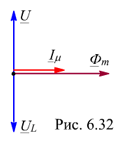

6.4.1.5. Векторная диаграмма идеализированной катушки со сталью
Подидеализированной катушкой со сталью понимается катушка, активное сопротивление R которой мало и им можно пренебречь, магнитный поток рассеяния ФP, активные потери от гистерезиса и вихревых токов в магнитопроводе и насыщение магнитопровода отсутствуют. Пренебрежение насыщением магнитопровода, гистерезисом и потерями от гистерезиса и вихревых токов позволяет пользоваться линейной зависимостью между магнитными потоками и МДС обмоток.
Начнем построение векторной диаграммы идеализированной катушки со сталью с вектора напряжения U, направив его вертикально вверх (рис. 6.32). Вектор магнитного потока Фm отстаёт по фазе от вектора U на угол p/2, а вектор ЭДС EL отстает по фазе от вектора Фm на угол p/2 (или от вектора U на угол p). Вектор EL находится в противофазе с вектором U и равен ему (по модулю).
Ток, создающий магнитный поток Ф, называют намагничивающим током. Будем его обозначать с индексом m, т. е. im, и полагать, что он синусоидальный по форме. При отсутствии потерь мощности в магнитопроводе и при R = 0 и ФР = 0 ток im в цепи с индуктивным элементом L отстает по фазе от напряжения u(t) на угол p/2, т. е. вектор тока Im будет совпадать по фазе с вектором потока Фm (см. рис. 6.32).